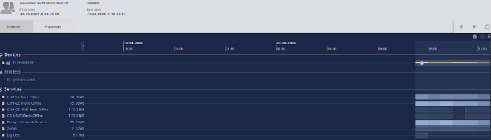
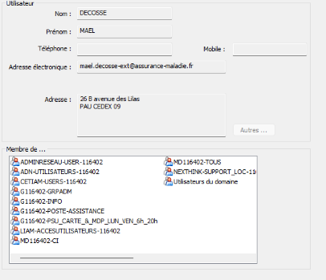
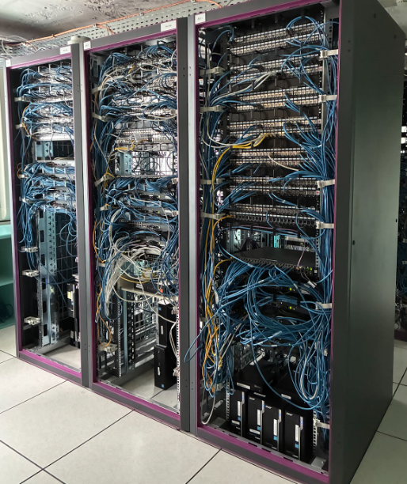
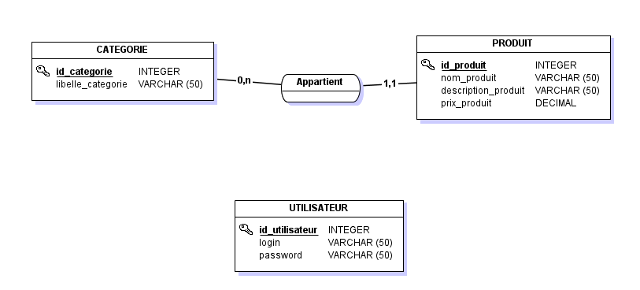
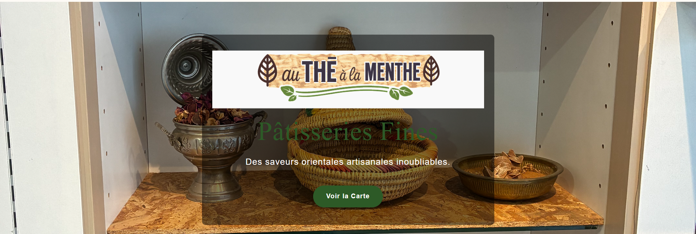
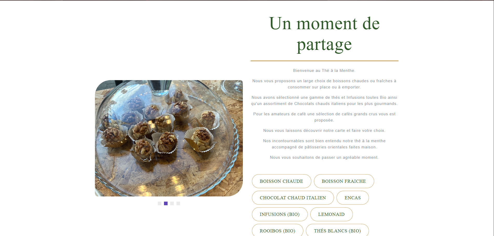
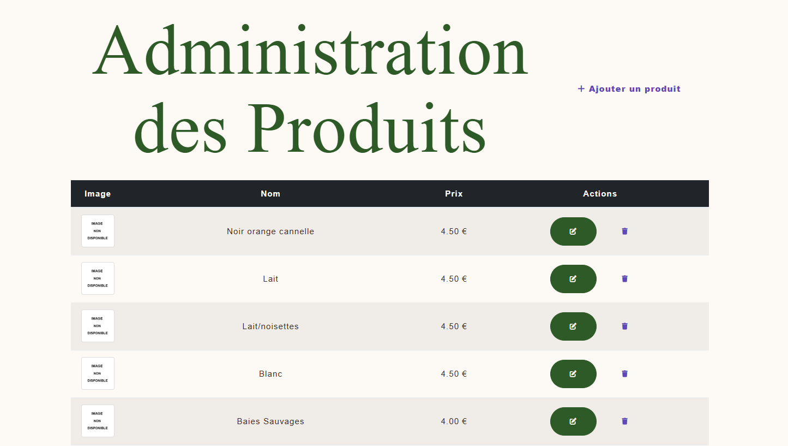

Stage de Première Année : "CPAM"
Support IT & Infrastructure - CPAM Pau
Maintenance de parc informatique, migration Windows 11, déploiement téléphonie et support utilisateur (NexThink, EAM, GLPI).
1. Fiche Identité & Contexte
Caisse Primaire d’Assurance Maladie (CPAM)
Adresse : 26bis Av. des Lilas, 64000 Pau
Mission : Accompagner les assurés, informer, prévenir et contrôler professionnels comme
particuliers.
Durant ce stage d’un mois, je suis intervenu lors d'une période d'intense activité. Mon rôle
visait principalement à préparer, installer et maintenir des dizaines de postes de travail pour
les agents.
2. Missions & Outils Utilisés
- Migration & Sauvegarde : Déploiement logiciel et clonage système avec Vnamm. Évolution globale ciblée : 114 postes migrés sur Windows 11 (24H2).
- Téléphonie : Configuration complète et distribution du matériel pour le changement d'opérateur.
- Support Utilisateur : Résolution de tickets via GLPI et assistance à distance (Zoom).
3. Monitoring et Securité
A. NexThink : Modération & Télémétrie
NexThink est un outil puissant pour superviser chaque agent. Il permet d'analyser l'état matériel (ex: charge RAM) afin d'anticiper les pannes et d'identifier le lieu de connexion (télétravail/sur site).

B. Enterprise Access Management (EAM)
Logiciel de gestion centralisée des accès physiques et numériques. Il relie le profil informatique d'un technicien à son badge pour déverrouiller un poste ou un espace très sécurisé (comme la salle serveur).

4. Infrastructure et Continuité
Ces missions m'ont permis d'accéder au cœur de l'infrastructure réseau.
Pour assurer la redondance des données sensibles (ex: risque d'incendie), l'entreprise
possède un coffre-fort contenant des bandes magnétiques qui archivent les
sauvegardes de longue durée.

Stage de Deuxième Année : "theALaMenthe"
Application Web - theALaMenthe
Application de gestion pour un établissement (restaurant/café) avec système de commande (carte), authentification et panneau d'administration.
1. Le Besoin Initial
Ce projet a été réalisé lors de mon stage de deuxième année. L'objectif était de développer une
application web de gestion "theALaMenthe" pour un établissement
(restaurant/café).
Le but principal était de concevoir une plateforme sur mesure, sans s'appuyer sur une usine à
gaz existante.
Contraintes du projet :
- Développement natif : PHP pur sans framework (Vanilla PHP).
- Structure imposée : Respect strict du pattern MVC (Modèle-Vue-Contrôleur).
- Sécurisé : Back-office sécurisé et protection contre les failles (XSS, Injections SQL).
2. Architecture & Technologies
L'application utilise une architecture MVC pour une séparation complète des responsabilités entre la logique métier, la gestion des requêtes, et l'affichage. Un routeur unique sécurise la navigation globale.
📁 Structure du projet (MVC)
- theALaMenthe
- BDD // Modélisation, scripts SQL et base de données
- config // Fichiers de configuration (connexion PDO)
- controleurs // Logique et traitement des actions (admin, auth, carte)
- images // Ressources graphiques et uploads
- js // Scripts dynamiques clients
- modeles // Accès base de données (Requêtes préparées)
- style // CSS et charte graphique
- vues // Affichage HTML des templates (frontend/backend)
- index.php // Routeur Front Controller unique
3. Fonctionnalités Clés & Extraits de Code
A. Routeur Principal Centralisé
Toutes les requêtes web passent par index.php. Il agit comme un Front
Controller. Il vérifie que la page demandée est autorisée avant d'inclure le
contrôleur correspondant, évitant ainsi l'accès direct aux fichiers.
// index.php : Routeur simple
$page = isset($_GET['page']) ? $_GET['page'] : 'accueil';
// Liste des pages autorisées en whitelist
$pages_autorisees = ['accueil', 'carte', 'auth', 'admin', 'mentions'];
if (in_array($page, $pages_autorisees)) {
if (file_exists("controleurs/$page.php")) {
require_once "controleurs/$page.php";
}
} else {
echo "<h1>Erreur 404</h1>";
}B. Espace d'Administration Sécurisé
Mise en place d'un système de session PHP classique. Si l'administrateur n'est pas authentifié lors de l'accès au back-office, une redirection automatique l'empêche de voir le contenu.
// controleurs/admin.php : Validation sécurité
if (!isset($_SESSION['admin'])) {
header('Location: index.php?page=auth');
exit;
}
// Importation des accès données (DAO)
require_once 'modeles/produit.php';
require_once 'modeles/categorie.php';C. Modélisation de la Base de Données
La structure de données relationnelle a été pensée pour être extensible, avec une gestion claire des catégories et des produits.

4. Gestion des Données (DAO avec PDO)
La logique d'accès à la base MySQL (CRUD) est entièrement découplée des contrôleurs et traitée par les Modèles. J'ai utilisé l'extension PDO (PHP Data Objects) et les requêtes préparées pour contrer l'injection SQL.
// modeles/produit.php : Fonctionnalités de récupération sécurisée
function getTousProduits($bdd) {
$stmt = $bdd->query("SELECT * FROM produit");
return $stmt->fetchAll(PDO::FETCH_ASSOC);
}
function getProduitsParCategorie($bdd, $id_categorie) {
// Requête préparée pour éviter l'injection SQL (!important)
$stmt = $bdd->prepare("SELECT * FROM produit WHERE id_categorie = ?");
$stmt->execute([$id_categorie]);
return $stmt->fetchAll(PDO::FETCH_ASSOC);
}Aperçus du Site


